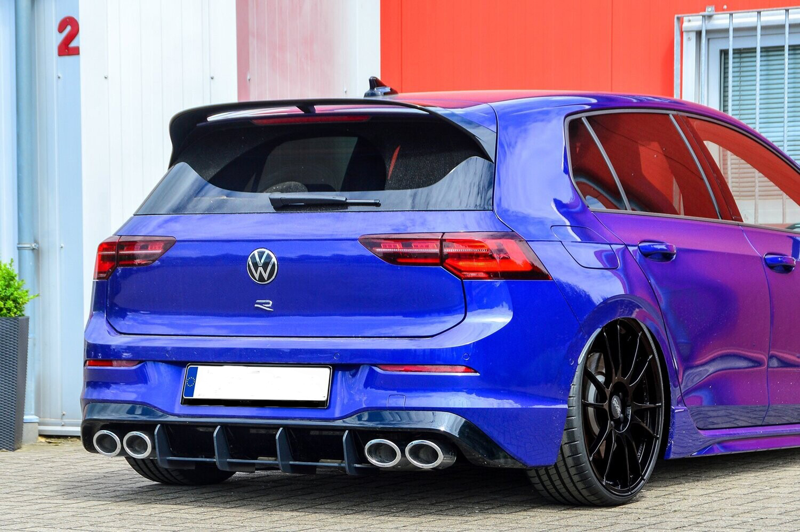
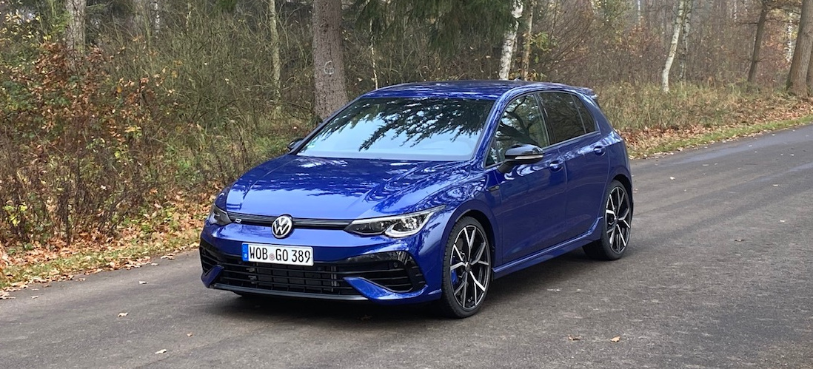

Под капака на Golf R има 2,0-литров четирицилиндров двигател с турбокомпресор, който произвежда 315 конски сили и въртящ момент от 310 lb-ft - от 288 к.с. и 280 lb-ft в последното поколение R. Двигателят се съчетава с шест -степенна механична или седемстепенна автоматична скоростна кутия с двоен съединител.
 